微服务
单体架构的特点：
- 简单方便、高度耦合、扩展性差，适合小型项目。例如：学生管理系统
分布式架构特点：
- 松耦合、扩展性好，但架构复杂，难度大。适合大型互联网项目，例如：京东、淘宝
微服务：一张良好的分布式架构方案
- 优点：拆分粒度更小、服务更独立、耦合度更低
- 缺点：架构非常复杂，运维、监控、部署难度提高
- 微服务需要根据业务模块拆分,做到单一职责,不要重复开发相同 业务
- 微服务可以将业务暴露为接口,供其它微服务使用
微服务调用方式
- 基于RestTemplate法器的http请求实现远程调用
- http请求做远程调用是与语言无关的调用，只要知道对方的ip、端口、接口路径、请求参数即可
跨服务远程调用
步骤：
- 注册RestTemplate 在order-service的OrderAcpplication中注册RestTemplate
```java @MapperScan("cn.itcast.order.mapper") @SpringBootApplication public class OrderApplication {
public static void main(String[] args) {
SpringApplication.run(OrderApplication.class, args);
}
/**
* 创建RestTemplate注入spring容器
*/
@Bean
public RestTemplate restTemplate(){
return new RestTemplate();
}
} ```
-
服务远程调用RestTemplate ```java @Service public class OrderService {
@Resource private OrderMapper orderMapper;
@Resource private RestTemplate restTemplate;
public Order queryOrderById(Long orderId) { // 查询订单 Order order = orderMapper.findById(orderId); // 利用RestTemplate发送http请求，得到user数据 String url = "http://localhost:8081/user/" + order.getUserId(); User user = restTemplate.getForObject(url, User.class); order.setUser(user); // 返回 return order; } } ```
结果：
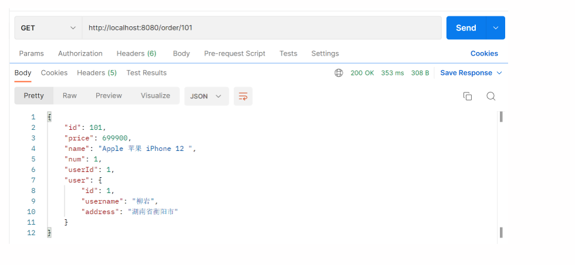
Eureka注册中心
在Eureka架构中，微服务角色有两类：
- EurekaServer：服务端，注册中心
- 记录服务信息
- 心跳监控
- EurekaClient：客户端
- Provider：服务提供者，例如案例中的user-service
- 注册自己的信息到EurekaServer
- 每隔30秒向EurekaServer发送心跳
- consumer：服务消费者，例如案例中的order-service
- 根据服务名称冲EurekaServer拉取服务列表
- 基于服务列表做负载均衡，选中一个微服务后法器远程调用
搭建Eureka
- 引入eureka-server依赖 ```xml
- 添加@EnableEurekaServer注解
java
@EnableEurekaServer
@SpringBootApplication
public class EurekaApplication {
public static void main(String[] args) {
SpringApplication.run(EurekaApplication.class, args);
}
}
- 在application.yml中配置eureka地址
yml server: port: 10086 spring: application: name: eureka-server # Eureka的服务名称 eureka: client: service-url: # eureka的地址信息 defaultZone: http://localhost:10086/eureka
服务注册
- 引入eureka-client依赖 ```xml
- 在application.yml中配置eureka地址
yaml server: port: 8081 spring: application: name: user-service # Eureka的服务名称 eureka: client: service-url: # eureka的地址信息 defaultZone: http://localhost:10086/eureka
服务拉取/发现
服务拉取是基于服务名称获取服务列表，然后再对服务列表做负载均衡
-
修改的代码，修改访问的url路径，用服务名代替ip、端口
java // String url = "http://localhost:8081/user/" + order.getUserId(); String url = "http://user-service/user/" + order.getUserId(); -
在order-service项目的启动类中的RestTemplate添加负载均衡注解@LoadBalanced
java @Bean @LoadBalanced public RestTemplate restTemplate(){ return new RestTemplate(); }
Ribbon负载均衡
负载均衡策略
| 内置负载均衡规则类 | 规则描述 |
|---|---|
| RoundRobinRule | 简单轮询服务列表来选择服务。它是Ribbon默认的负载均衡规则 |
| AvailabilityFilteringRule | 对一下两种默认服务器进行忽略： （1）在默认情况下，这台服务器如果3次连接失败，这台服务器就会被设置为“短路状态”。短路状态将持续30秒，如果再次连接失败，短路的持续时间就会几何级地增加。 （2）并发数过高的服务器。如果一个服务器的并发连接数过高，配置了该规则的客户端也会将其忽略。并发连接数的上限，可以由客户端的 |
| WeightedResponseTimeRule | 为每一个服务器赋予一个权重值。服务器响应时间越长，这个服务器的权重就越小。这个规则会随机选择服务器，这个权重会影响服务器的选择 |
| ZoneAvoidanceRule(默认) | 以区域可用的服务器为基础进行服务器的选择。使用Zone对服务器进行分类，这个Zone可用理解为一个机房、一个机架等。而后再对Zone内的多个服务做轮询 |
| RestAvailableRule | 忽略哪些短路的服务器，并选择并发数较低的服务器 |
| RandomRule | 随机选择一个可用的服务器 |
| RetryRule | 重试机制的选择逻辑 |
自定义负载均衡策略
通过定义IRule实现可用修改负载均衡规则，有两种方式：
-
代码方式：在order-service中的OrderApplication类中，定义一个新的IRule（作用范围是全局） ```java /**
- 修改Ribbon负载均衡规则 */ @Bean public IRule randomRule() { return new RandomRule(); } ```
-
配置文件方式：在order-service中的application.yml文件中，添加新的配置也可以修改规则（针对某个服务）
yml user-service: ribbon: NFLoadBalancerRuleClassName: com.netflix.loadbalancer.RandomRule # 负载均衡规则
饥饿加载
-
开启饥饿加载
-
指定饥饿加载的微服务名称
yml ribbon: eager-load: enabled: true # 开启饥饿加载 clients: # 指定饥饿加载的服务名称 - user-service
Nacos注册中心
Nacos服务搭建
- 下载安装包
- 解压
- 在bin目录下运行指令：startup.cmd -m standalone
- 在浏览器输入地址：http://localhost:8848/nacos即可
默认的账号和密码都是nacos
Nacos服务的注册或发现
- 引入nacos.discovery依赖
父工程：
xml
<dependency>
<groupId>com.alibaba.cloud</groupId>
<artifactId>spring-cloud-alibaba-dependencies</artifactId>
<version>2.2.5.RELEASE</version>
<type>pom</type>
<scope>import</scope>
</dependency>
客户端：
```xml
- 配置nacos地址spring.cloud.nacos.server-addr
yml spring: cloud: nacos: server-addr: localhost:8848 # nacos服务地址
Nacos服务分级模型
- 一级是服务，例如userservice
- 二级是集群，例如杭州、上海
- 三级是实例，例如杭州机房的某台部署了userservice的服务器
如何设置实例的集群属性
- 修改application.yml文件，添加spring.cloud.nacos.discovery.cluster-name属性
yml spring: cloud: nacos: discovery: cluster-name: SH
NacosRule负载均衡策略
-
有限选择同集群服务实例列表
-
本地集群找不到提供者，才去其他集群寻找，并且会报警告
sh 01-20 12:38:55:786 WARN 27920 --- [nio-8080-exec-9] c.alibaba.cloud.nacos.ribbon.NacosRule : A cross-cluster call occurs，name = user-service, clusterName = HZ, instance = [Instance{instanceId='192.168.3.250#8083#SH#DEFAULT_GROUP@@user-service', ip='192.168.3.250', port=8083, weight=1.0, healthy=true, enabled=true, ephemeral=true, clusterName='SH', serviceName='DEFAULT_GROUP@@user-service', metadata={preserved.register.source=SPRING_CLOUD}} -
确定了可用实例列表后，再采用随机负载均衡挑选实例
Nacos加权负载均衡
实例的权重控制
- Nacos控制台可以设置实例的权重值，0~1之间
- 同集群内的多个实例，权重越高被访问的频率越高
- 权重设置为0则完全不会被访问
Nacos环境隔离
- namespace用来做环境隔离
- 每个namespace都有唯一id
- 不同namespace下的服务不可见
添加命名空间：
spring:
cloud:
nacos:
discovery:
namespace: ed3999ae-1370-4d9f-bfde-2884d75ff2f3 # dev环境
Nacos与Eureka
共同点：
- 都支持服务注册和服务拉取
- 都支持服务提供者心跳方式做健康检测
区别：
- Nacos支持服务端主动检测提供者状态：零食实例采用心跳模式，非临时实例采用主动检测模式
- 临时实例心跳不正常会被剔除,非临时实例则不会被剔除
- Nacos支持服务列表变更的消息推送模式,服务列表更新更及时
- Nacos集群默认采用AP方式,当集群中存在非临时实例时，采用CP模式; Eureka采用AP方式
Nacos配置管理
-
在nacos中添加配置文件
-
在微服务中引入nacos的config依赖 ```xml
- 在微服务中添加bootstrap.yml,配置nacos地址、当前环境、服务名称、文件后缀名。这些决定了程序启动时去nacos读取哪个文件
yml spring: application: name: user-service # 服务名称 profiles: active: dev # 环境 cloud: nacos: server-addr: localhost:8848 config: file-extension: yaml # 文件后缀名
Nacos配置更改后，微服务可以实现热更新，方式:
-
通过@Value注解注入,结合@RefreshScope来刷新
java @Slf4j @RestController @RequestMapping("/user") @RefreshScope public class UserController { @Value("${pattern.dataformat}") private String dataformat; } -
通过@ConfigurationProperties注入，自动刷新 ```java @Data @Component @ConfigurationProperties(prefix = "pattern") public class PatternProperties { private String dataformat; }
@Slf4j @RestController @RequestMapping("/user") public class UserController { @Resource private PatternProperties properties; } ```
注意：
- 不是所有的配置都适合放到配置中心,维护起来比较麻烦
- 建议将一些关键参数，需要运行时调整的参数放到nacos配置中心，一般都是自定义配置
微服务会从nacos读取的配置文件:
- [服务名]-[spring.profile.active].yaml,环境配置
- [服务名].yaml,默认配置,多环境共享
优先级：
[服务名]-[环境].yaml > [服务名].yaml > 本地配置
Nacos集群
集群搭建步骤：
- 搭建MySQL集群并初始化数据库表
- 下载解压nacos
- 修改集群配置(节点信息)、数据库配置
- 分别启动多个nacos节点
- nginx反向代理
http客户端Feign
快速入门
Feign的使用步骤
- 引入依赖 ```xml
- 添加@EnableFeignClients注解 ```java @MapperScan("cn.itcast.order.mapper") @SpringBootApplication @EnableFeignClients public class OrderApplication { public static void main(String[] args) { SpringApplication.run(OrderApplication.class, args); } }
```
-
编写FeignClient接口
java @FeignClient("userservice") public interface UserClient { @GetMapping("user/{id}") User findById(@PathVariable Long id); } -
使用FeignClient中定义的方法代替RestTemplate ```java @Service public class OrderService {
@Resource private OrderMapper orderMapper;
@Resource private UserClient userClient;
public Order queryOrderById(Long orderId) { // 查询订单 Order order = orderMapper.findById(orderId); // 利用Feign发送http请求，得到user数据 User user = userClient.findById(order.getUserId()); order.setUser(user); // 返回 return order; } } ```
自定义Feign配置
Feign运行自定义配置来覆盖默认配置,可以修改的配置如下:
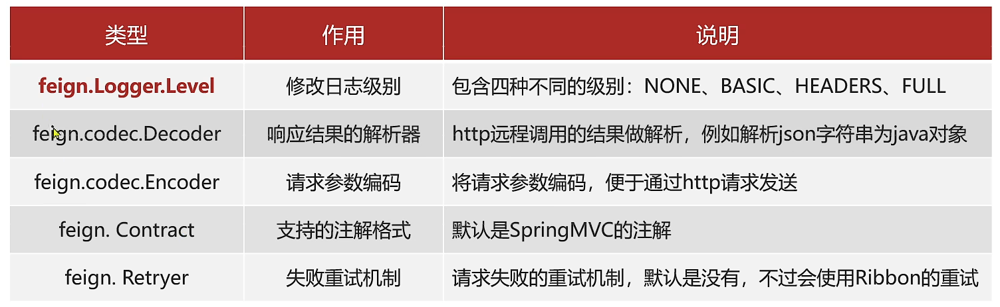
一般我们需要配置的就是日志级别。
Feign的日志配置:
-
方式一是配置文件, feign.client.config.xxx.loggerLevel
-
如果xxx是default则代表全局
yml feign: client: config: default: logger-level: full -
如果xxx是服务名称，例如userservice则代表某服务
yml feign: client: config: userserivce: logger-level: full -
方式二是java代码配置Logger.Level这个Bean
java public class DefaultFeignConfig { @Bean public Logger.Level logLevel(){ return Logger.Level.BASIC; } } -
如果在@EnableFeignClients注解声明则代表全局
java @MapperScan("cn.itcast.order.mapper") @SpringBootApplication @EnableFeignClients(defaultConfiguration = DefaultFeignConfig.class) public class OrderApplication { public static void main(String[] args) { SpringApplication.run(OrderApplication.class, args); } } -
如果在@FeignClient注解中声明则代表某服务
java @FeignClient("userservice") public class DefaultFeignConfig { @Bean public Logger.Level logLevel(){ return Logger.Level.BASIC; } }
Feign优化
-
日志级别尽量用basic
-
使用HttpClient或OKHttp代替URLConnection
-
引入feign-httpClient依赖
xml <!--HttpClient--> <dependency> <groupId>io.github.openfeign</groupId> <artifactId>feign-httpclient</artifactId> </dependency> -
配置文件开启httpClient功能，设置连接池参数
yml feign: httpclient: enabled: true # 支持HttpClient的开关 max-connections: 200 # 最大连接数 max-connections-per-route: 50 # 单个路径最大的连接数
Feign最佳实践
- 让controller和FeignClient继承同一接口
- 将FeignClient、POJO、Feign的默认配置都定义到一个项目中，供所有消费者使用
不同包的FeignClient的导入有两种方式:
- 在@EnableFeignClients注解中添加basePackages，指定FeignClient所在的包
java
@EnableFeignClients(basePackages = "cn.itcast.feign.clients")
- 在@EnableFeignClients注解中添加clients，指定具体FeignClient的字节码
java @EnableFeignClients(clients = UserClient.class)
统一网关Gateway
网关的作用:
- 对用户请求做身份认证、权限校验
- 将用户请求路由到微服务,并实现负载均衡
- 对用户请求做限流
搭建网关

- 创建项目，引入nacos服务发现和gateway依赖 ```xml
- 配置application.yml,包括服务基本信息、nacos地址、路由
yml
server:
port: 10010
spring:
application:
name: gateway
cloud:
nacos:
server-addr: localhost:8848
gateway:
routes:
- id: user-service # 路由标识，必须唯一
uri: lb://userserivce # 路由的目标地址
predicates: # 路径断言，判断请求是否符合规则
- Path=/user/** # 路径断言，判断请求是否是以/user开头
- id: order-service
uri: lb://orderservice
predicates:
- Path=/order/**
路由配置包括:
- 路由id: 路由的唯一标示
- 路由目标(uri): 路由的目标地址，http代表固定地址，lb代表根据服务名负载均衡
-
路由断言(predicates): 判断路由的规则，判断请求是否符合要求，符合则转发到路由目的地
-
路由过滤器(filters): 对请求或响应做处理
路由断言工厂Route Predicate Factory
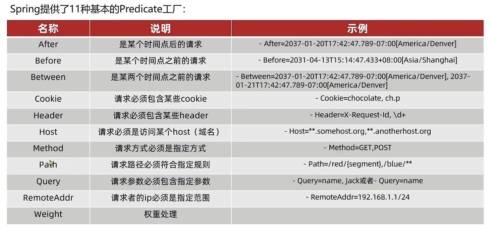
- PredicateFactory的作用是什么?
读取用户定义的断言条件,对请求做出判断
- Path=/user/**是什么含义?
路径是以/user开头的就认为是符合的
路由过滤器GatewayFilter
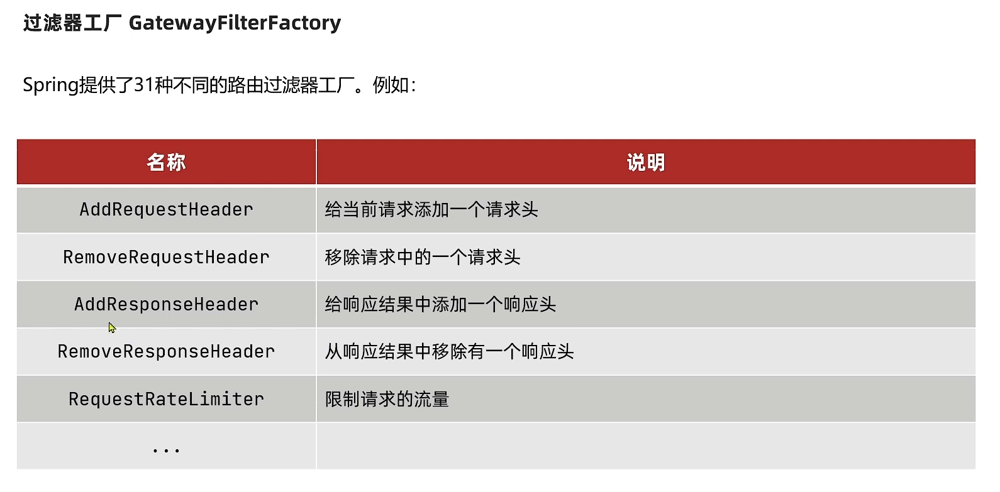
过滤器的作用是什么？
- 对路由的请求或响应做加工处理，比如添加请求头
- 配置在路由下的过滤器只对当前路由的请求生效
defaultFilters的作用是什么?
- 对所有路由都生效的过滤器
全局过滤器
- 全局过滤器的作用是什么？
对所有路由都生效的过滤器，并且可以自定义处理逻辑
-
实现全局过滤器的步骤？
-
实现GlobalFilter接口
- 添加@Order注解或实现Ordered接口
- 编写处理逻辑
java
@Component
@Order(-1) // 设置执行顺序优先级，一定要有！！！！
public class AuthorizeFilter implements GlobalFilter {
@Override
public Mono<Void> filter(ServerWebExchange exchange, GatewayFilterChain chain) {
// 获取请求参数
ServerHttpRequest request = exchange.getRequest();
MultiValueMap<String, String> params = request.getQueryParams();
// 获取参数中的authorize参数
String authorize = params.getFirst("authorize");
// 判断参数是否等于admin
if ("admin".equals(authorize)) {
// 是，放行
return chain.filter(exchange);
}
// 否
// 设置状态码
exchange.getResponse().setStatusCode(HttpStatus.UNAUTHORIZED);
// 拦截
return exchange.getResponse().setComplete();
}
}
过滤器执行顺序
- 每一个过滤器都必须指定一个int类型的order值,order值越小,优先级越高,执行顺序越靠前。
- GlobalFilter通过实现Ordered接口,或者添加@Order注解来指定order值,由我们自己指定
- 路由过滤器和defaultFilter的order由Spring指定,默认是按照声明顺序从1递增。
- 当过滤器的order值一样时,会按照defaultFilter >路由过滤器> GlobalFilter的顺序执行。
路由过滤器、defaultFilter、全局过滤器的执行顺序?
- order值越小，优先级越高
- 当order值一样时，顺序是defaultFilter最先，然后是局部的路由过滤器,最后是全局过滤器
跨域问题
跨域：域名个一致就是跨域，土要包括
- 域名不同: www.taobao.com和www.taobao.org和www.jd.com和miaosha.jd.com
- 域名相同,端口不同: localhost:8080和localhost:8081
跨域问题：浏览器禁止请求的发起者与服务端发生跨域ajax请求,请求被浏览器拦截的问题
spring:
gateway:
globalcors: # 全局的跨域处理
add-to-simple-url-handler-mapping: true # 解决options请求被拦截问题
cors-configurations:
'[/**]':
allowedOrigins: # 允许那些网站的跨域请求
- "http://localhost:8090"
- "http://www.leyou.com"
allowedMethods: # 允许的跨域ajax的请求方式
- "GET"
- "POST"
- "PUT"
- "DELETE"
- "OPTIONS"
allowedHeaders: "*" # 允许在请求中携带的头信息
allowCredentials: true # 是否允许携带cookie
maxAge: 360000 # 这次跨域检测的有效期
Docker
-
Docker如何解决大型项目依赖关系复杂,不同组件依赖的兼容性问题?
-
Docker允许开发中将应用、依赖、函数库、配置一起打包，形成可移植镜像
-
Docker应用运行在容器中，使用沙箱机制，相互隔离
-
Docker如何解决开发、测试、生产环境有差异的问题
-
Docker镜像中包含完整运行环境，包括系统函数库，仅依赖系统的Linux内核，因此可以在任意Linux操作系统上运行
-
Docker是一个快速交付应用、运行应用的技术:
-
可以将程序及其依赖、运行环境一起打包为一个镜像,可以迁移到任意Linux操作系统
-
运行时利用沙箱机制形成隔离容器,各个应用互不干扰
-
启动、移除都可以通过一行命令完成,方便快捷
-
Docker和虚拟机的差异：
- docker是一个系统进程；虚拟机是在操作系统中的操作系统
-
docker体积小、启动速度快、性能好;虚拟机体积大、启动速度慢、性能一般
-
镜像：
- 将应用程序及其依赖、环境、配置打包在一起
- 容器：
- 镜像运行起来就是容器,一个镜像可以运行多个容器
- Docker结构：
- 服务端:接收命令或远程请求,操作镜像或容器
- 客户端:发送命令或者请求到Docker服务端
- DockerHub:
- 一个镜像托管的服务器，类似的还有阿里云镜像服务，统称为DockerRegistry
自定义镜像
镜像结构

镜像是分层结构,每一层称为一个Layer
- Baselmage层:包含基本的系统函数库、环境变量、文件系统
- Entrypoint:入口，是镜像中应用启动的命令
- 其它:在Baselmage基础上添加依赖、安装程序、完成整个应用的安装和配置
Dockerfile
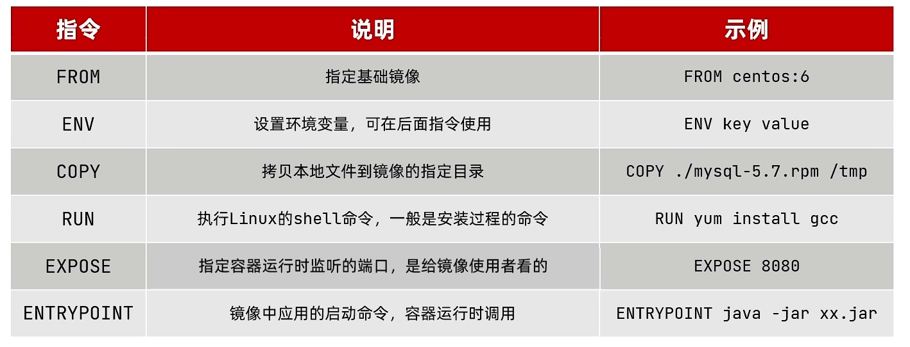
- Dockerfile的本质是一个文件,通过指令描述镜像的构建过程
- Dockerfile的第一行必须是FROM，从一个基础镜像来构建
- 基础镜像可以是基本操作系统,如Ubuntu。也可以是其他人制作好的镜像,例如: java:8-alpine
DockerCompose
DockerCompose有什么作用？
- 帮助我们快速部署分布式应用,无需一个个微服务去构建镜像和部署。
私有镜像服务器
- 推送本地镜像到仓库前都必须重命名(docker tag)镜像，以镜像仓库地址为前缀
-
镜像仓库推送前需要把仓库地址配置到docker服务的daemon.json文件中，
-
推送使用docker push命令
- 拉取使用docker pull命令
MQ
同步
同步调用的优点：
- 时效性较强，可以立即得到结果
同步调用的问题：
- 耦合度高
- 性能和吞吐能力下降
- 有额外的资源消耗
- 有级联失败问题
异步
异步通信的优点：
- 耦合度低
- 吞吐量提升
- 故障隔离
- 流量削峰
异步通信的缺点：
- 依赖于Broker的可靠性、安全性、吞吐能力
- 架构复杂了，业务没有明显的流程线，不好追踪管理
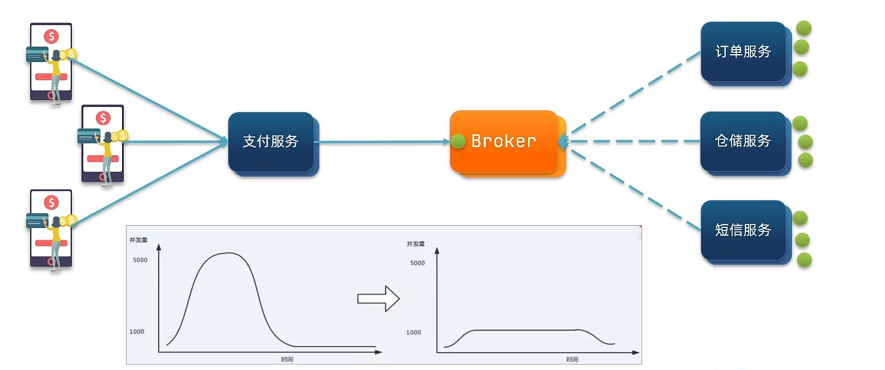
MQ框架间的区别
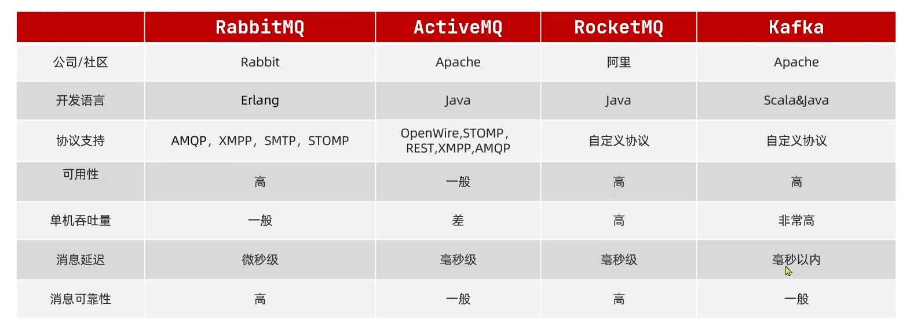
RabbitMQ
RabbitMQ中的几个概念:
- channel:操作MQ的工具
- exchange：路由消息到队列中
- queue：缓存消息
- virtual host:虚拟主机，是对queue、exchange等资源的逻辑分组
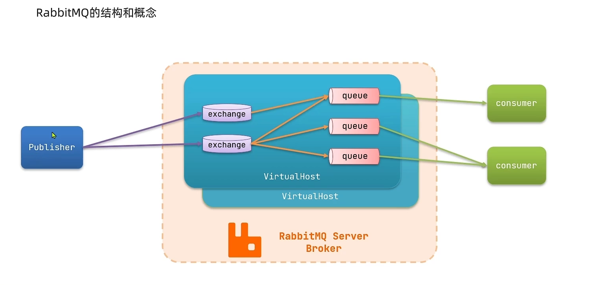
基本消息队列的消息发送流程： 1. 建立connection 2. 创建channel 3. 利用channel声明队列 4. 利用channel向队列发送消息
基本消息队列的消息接收流程：
- 建立connection
- 创建channel
- 利用channel声明队列(为了避免队列不存在，所以再次声明队列)
- 定义consumer的消费行为handleDelivery()
- 利用channel将消费者与队列绑定
SpringAMQP
什么是AMQP?
- 应用间消息通信的一种协议,与语言和平台无关。
SpringAMQP如何发送消息？
- 引入amqp的starter依赖 ```xml
-
配置RabbitMQ地址
yml spring: rabbitmq: host: 192.168.58.129 # rabbitMQ的ip地址 port: 5672 username: itcast password: 123321 virtual-host: / -
利用RabbitTemplate的convertAndSend方法 ```java @SpringBootTest @RunWith(SpringRunner.class) public class SpringAMQPTest { @Resource private RabbitTemplate rabbitTemplate;
@Test public void testSendMsgSimpleQueue() { String queueName = "simple.queue"; String msg = "hello, springAMQP"; rabbitTemplate.convertAndSend(queueName, msg); } } ```
SpringAMQP如何接收消息？
- 引入amqp的starter依赖 ```xml
-
配置RabbitMQ地址
yml spring: rabbitmq: host: 192.168.58.129 # rabbitMQ的ip地址 port: 5672 username: itcast password: 123321 virtual-host: / -
定义类，添加@Component注解
-
类中声明方法，添加@RabbitListener注解，方法参数就时消息
java @Component public class SpringRabbitListener { @RabbitListener(queues = "simple.queue") public void listenerSimpleQueue(String msg) { System.out.println("消费者监听到simple.queue的消息：" + msg); } }
注意：消息一旦消费就会从队列删除，RabbitMQ没有消息回溯功能
Work Queue 工作队列
Work queue,工作队列,可以提高消息处理速度,避免队列消息堆积
Work模型的使用：
-
多个消费者绑定到一个队列,同一条消息只会被一个消费者处理
-
通过设置prefetch来控制消费者预取的消息数量
yml spring: rabbitmq: host: 192.168.58.129 # rabbitMQ的ip地址 port: 5672 username: itcast password: 123321 virtual-host: / listener: simple: prefetch: 1 # 设置消息预取上限，每次只能获取1条消息，处理完才能获取下一个消息
发布订阅-Fanout Exchange
Fanout Exchange会将接收到的消息路由到每一个跟其绑定的queue
交换机的作用是什么？
- 接收publisher发送的消息
- 将消息按照规则路由到与之绑定的队列
- 不能缓存消息，路由失败，消息丢失
- FanoutExchange的会将消息路由到每个绑定的队列
声明队列、交换机、绑定关系的Bean是什么?
- Queue
- FanoutExchange
- Binding
步骤：
- 实现交换机与队列的绑定
@Configuration
public class FanoutConfig {
//声明交换机
@Bean
public FanoutExchange fanoutExchange() {
return new FanoutExchange("itcast.fanout");
}
//声明队列fanout.queue1
@Bean
public Queue fanoutQueue1() {
return new Queue("fanout.queue1");
}
//绑定
@Bean
public Binding fanoutBinding1(Queue fanoutQueue1, FanoutExchange fanoutExchange) {
return BindingBuilder.bind(fanoutQueue1).to(fanoutExchange);
}
//声明队列fanout.queue2
@Bean
public Queue fanoutQueue2() {
return new Queue("fanout.queue2");
}
@Bean
public Binding fanoutBinding2(Queue fanoutQueue2, FanoutExchange fanoutExchange) {
return BindingBuilder.bind(fanoutQueue2).to(fanoutExchange);
}
}
- 接收
@Component
public class SpringRabbitListener {
@RabbitListener(queues = "fanout.queue1")
public void listenerFanoutQueue1(String msg) throws InterruptedException {
System.out.println("消费者[1]接受到fanout.queue的消息：[" + msg + "]");
Thread.sleep(200);
}
@RabbitListener(queues = "fanout.queue2")
public void listenerFanoutQueue2(String msg) throws InterruptedException {
System.err.println("消费者[2]接受到fanout.queue的消息：[" + msg + "]");
Thread.sleep(200);
}
}
- 发送
@SpringBootTest
@RunWith(SpringRunner.class)
public class SpringAMQPTest {
@Resource
private RabbitTemplate rabbitTemplate;
@Test
public void testSendFanoutExchange() {
String exchangeName = "itcast.fanout";
String msg = "hello everyone";
// 发送消息，参数分别是：交互机名称、RoutingKey（暂时为空）、消息
rabbitTemplate.convertAndSend(exchangeName, "", msg);
}
}
发布订阅-DirectExchange
Direct Exchange会将接收到的消息根据规则路由到指定的Queue,因此称为路由模式(routes) 。
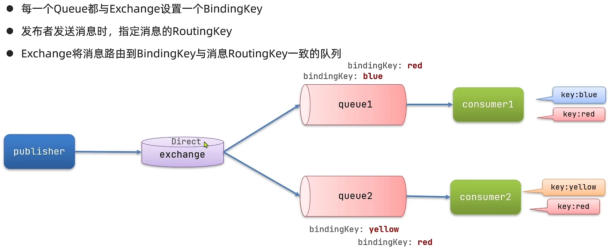
使用步骤：
- 在consumer服务中,编写两个消费者方法,分别监听direct.queue1和direct.queue2,
- 并利用@RabbitListener声明Exchange,Queue、 RoutingKey
@RabbitListener(bindings = @QueueBinding(
value = @Queue(name = "direct.queue1"),
exchange = @Exchange(name = "itcast.direct", type = ExchangeTypes.DIRECT),
key = {"red", "blue"}
))
public void listenDirectQueue1(String msg) {
System.out.println("消费者接受到direct.queue1的消息：[" + msg + "]");
}
@RabbitListener(bindings = @QueueBinding(
value = @Queue(name = "direct.queue2"),
exchange = @Exchange(name = "itcast.direct", type = ExchangeTypes.DIRECT),
key = {"red", "yellow"}
))
public void listenDirectQueue2(String msg) {
System.out.println("消费者接受到direct.queue2的消息：[" + msg + "]");
}
描述下Direct交换机与Fanout交换机的差异?
- Fanout交换机将消息路由给每一个与之绑定的队列
- Direct交换机根据RoutingKey判断路由给哪个队列
- 如果多个队列具有相同的RoutingKey,则与Fanout功能类似
基于@RabbitListener注解声明队列和交换机有哪些常见注解?
- @Queue
- @Exchange
发布订阅-TopicExchange
TopicExchange与DirectExchange类似,区别在于routingKey必须是多个单词的列表,并且以'.'分割。

实现：
接收
@RabbitListener(bindings = @QueueBinding(
value = @Queue(name = "topic.queue1"),
exchange = @Exchange(name = "itcast.topic", type = ExchangeTypes.TOPIC),
key = "china.#"
))
public void listenTopicQueue1(String msg) {
System.out.println("消费者接受到topic.queue1的消息：[" + msg + "]");
}
@RabbitListener(bindings = @QueueBinding(
value = @Queue(name = "topic.queue2"),
exchange = @Exchange(name = "itcast.topic", type = ExchangeTypes.TOPIC),
key = "#.news"
))
public void listenTopicQueue2(String msg) {
System.out.println("消费者接受到topic.queue2的消息：[" + msg + "]");
}
发送
@Test
public void testSendTopicExchange() {
String exchangeName = "itcast.topic";
String msg = "信工之星yyds！！！";
rabbitTemplate.convertAndSend(exchangeName, "china.news", msg);
}
消息转换器
SpringAMQP中消息的序列化和反序列化是怎么实现的?
-
利用MessageConverter实现的，默认是JDK的序列化
-
推荐使用自定义的MessageConverter去覆盖默认的MessageConverter
```xml
java
@Bean
public MessageConverter messageConverter(){
return new Jackson2JsonMessageConverter();
}
- 注意发送方与接收方必须使用相同的MessageConverter
elasticsearch
什么是elasticsearch?
- 一个开源的分布式搜索引擎，可以用来实现搜索、日志统计、分析、系统监控等功能
什么是elastic stack (ELK) ?
-
是以elasticsearch为核心的技术栈，包括beats、Logstash、kibana, elasticsearch
-
beats、Logstash数据收集
- kibana数据可视化
- elasticsearch数据存储、搜索
什么是Lucene?
- 是Apache的开源搜索引擎类库，提供了搜索引擎的核心API
倒排索引
什么是文档和词条？
- 每一条数据就是一个文档
- 对文档中的内容分词，得到的词语就是词条
什么是正向索引？
- 基于文档id创建索引。查询词条时必须先找到文档,而后判断是否包含词条
什么是倒排索引？
- 对文档内容分词，对词条创建索引，并记录词条所在文档的信息。查询时先根据词条查询到文档id，而后获取到文档
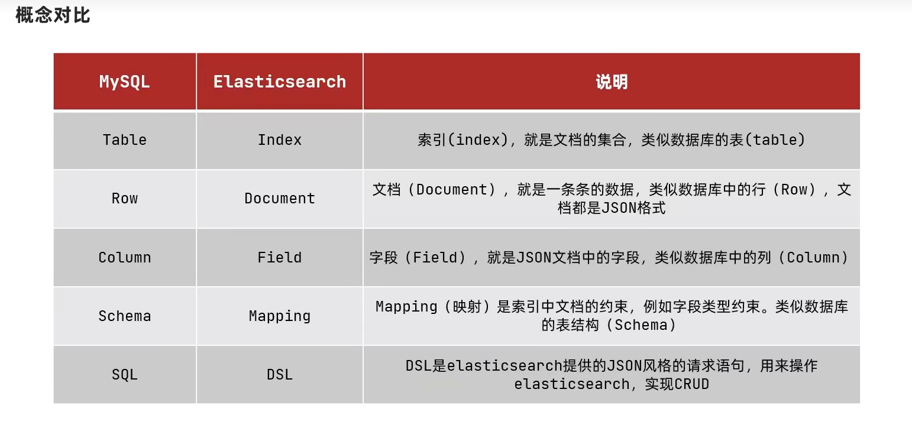
- 文档：一条数据就是一个文档，es中是Json格式
- 字段：Json文档中的字段
- 索引：同类型文档的集合
- 映射：索引中文档的约束,比如字段名称、类型
Mysql与Elasticsearch的关系
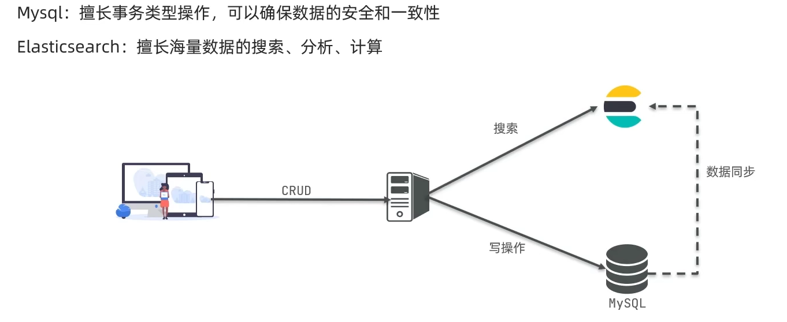
分词器
分词器的作用是什么？
- 创建倒排索引时对文档分词
- 用户搜索时，对输入的内容分词
iK分词器有几种模式？
- ik_smart：智能切分，粗粒度
- ik_max_word:最细切分,细粒度
iK分词器如何拓展词条?如何停用词条?
- 利用config目录的lkAnalyzer.cfg.xml文件添加拓展词典和停用词典
- 在词典中添加拓展词条或者停用词条
<?xml version="1.0" encoding="UTF-8"?>
<!DOCTYPE properties SYSTEM "http://java.sun.com/dtd/properties.dtd">
<properties>
<comment>IK Analyzer 扩展配置</comment>
<!--用户可以在这里配置自己的扩展字典 -->
<entry key="ext_dict">ext.dic</entry>
<!--用户可以在这里配置自己的扩展停止词字典-->
<entry key="ext_stopwords">stopword.dic</entry>
<!--用户可以在这里配置远程扩展字典 -->
<!-- <entry key="remote_ext_dict">words_location</entry> -->
<!--用户可以在这里配置远程扩展停止词字典-->
<!-- <entry key="remote_ext_stopwords">words_location</entry> -->
</properties>
索引库
mapping属性
mapping常见属性有哪些？
- type:数据类型
- index:是否索引
- analyzer: 分词器
- properties： 子字段
type常见的有哪些？
- 字符串: text、keyword
- 数字：long、integer、short、byte、double、float
- 布尔: boolean
- 日期: date
- 对象：object
索引库操作
-
创建索引库： PUT/索引库名 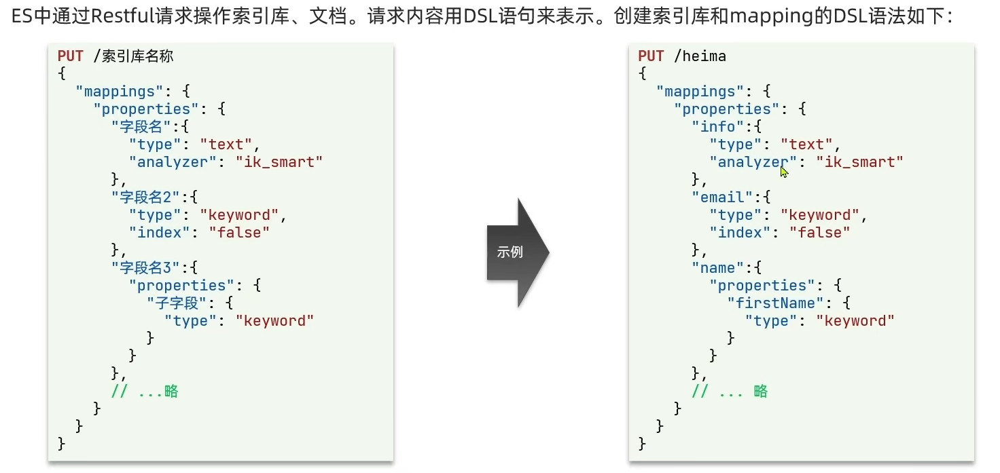
-
查询索引库： GET /索引库名

-
删除索引库: DELETE /索引库名 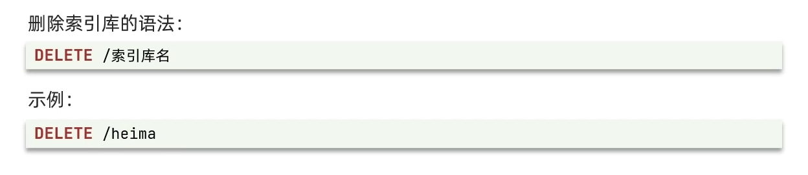
-
添加字段: PUT /索引库名/_mapping
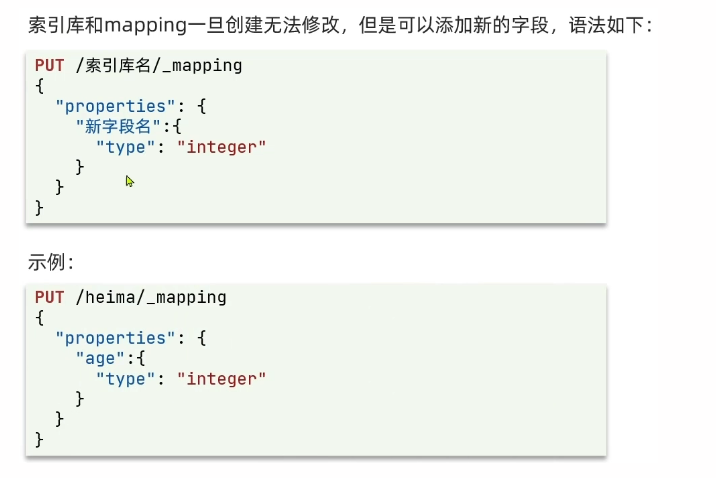
文档操作
- 创建文档: POST/索引库名/_doc/文档id {json文档}
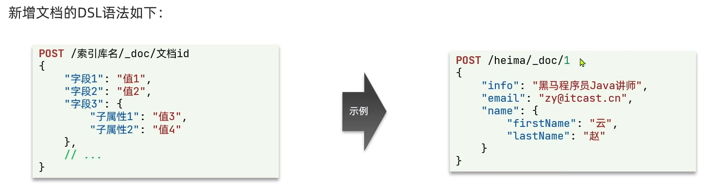
- 查询文档: GET/索引库名/_doc/文档id
- 删除文档: DELETE /索引库名/_doc/文档id
- 修改文档：
- 全量修改: PUT /索引库名/_doc/文档id {json文档}
- 增量修改: POST /索引库名/_updatey文档id { "doc": {字段}}
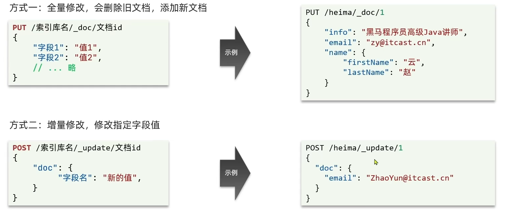
RestClient
操作索引库
基本操作：
- 初始化RestHighLevelClient
- 创建XxxIndexRequest。XXX是CREATE、 Get、 Delete
- 准备DSL (CREATE时需要）
- 发送请求。调用RestHighLevelClient#indices().xxx()方法, xxx是create、exists、 delete
```java public class HotelIndexTest { private RestHighLevelClient client;
@Test
void testInit() {
System.out.println(client);
}
/**
* 删除
*/
@Test
void deleteHotelIndex() throws IOException {
client.indices().delete(new DeleteIndexRequest("hotel"), RequestOptions.DEFAULT);
}
/**
* 判断是否存在
*/
@Test
void existsHotelIndex() throws IOException {
boolean exists = client.indices().exists(new GetIndexRequest("hotel"), RequestOptions.DEFAULT);
System.out.println(exists ? "索引库存在" : "索引库不存在");
}
/**
* 创建
*/
@Test
void creatHotelIndex() throws IOException {
// 1.创建Request对象
CreateIndexRequest request = new CreateIndexRequest("hotel");
// 2.准备请求参数,准备DSL
request.source(MAPPING_TEMPLATE, XContentType.JSON);
// 3.发送请求
client.indices().create(request, RequestOptions.DEFAULT);
}
/**
* 初始化
*/
@BeforeEach
void setUp() {
client = new RestHighLevelClient(RestClient.builder(
HttpHost.create("http://192.168.58.130:9200")
));
}
@AfterEach
void tearDown() throws IOException {
client.close();
}
} ```
操作文档
- 初始化RestHighLevelClient
- 创建XxxRequest, XXX是Index, Get, Update, Delete
- 准备参数（Index和Update时需要）
- 发送请求。调用RestHighLevelClient#.xxx()方法，xxx是index, get, update, delete
- 解析结果（Get时需要）
@SpringBootTest
public class HotelDocumentTest {
@Resource
private IHotelService hotelService;
private RestHighLevelClient client;
/**
* 添加文档
*/
@Test
void testAddDocument() throws IOException {
Hotel hotel = hotelService.getById(36934L);
HotelDoc hotelDoc = new HotelDoc(hotel);
// 1.准备Request对象
IndexRequest request = new IndexRequest("hotel").id(hotelDoc.getId().toString());
// 2.准备JSON文档
request.source(JSON.toJSONString(hotelDoc), XContentType.JSON);
// 3.发送请求
client.index(request, RequestOptions.DEFAULT);
}
/**
* 获取文档
*/
@Test
void testGetDocument() throws IOException {
// 1.获取Request对象
GetRequest request = new GetRequest("hotel", "36934");
// 2.发送请求，获取响应
GetResponse response = client.get(request, RequestOptions.DEFAULT);
// 3.解析响应结果
String json = response.getSourceAsString();
HotelDoc hotelDoc = JSON.parseObject(json, HotelDoc.class);
System.out.println(hotelDoc);
}
/**
* 更新文档
*/
@Test
void testUpdateDocument() throws IOException {
// 1.获取Request对象
UpdateRequest request = new UpdateRequest("hotel", "36934");
// 2.准备请求参数
request.doc(
"price", "10000",
"starName", "五钻"
);
// 3.发送请求
client.update(request, RequestOptions.DEFAULT);
}
/**
* 删除文档
*/
@Test
void testDeleteDocument() throws IOException {
client.delete(new DeleteRequest("hotel", "36934"), RequestOptions.DEFAULT);
}
/**
* 批量添加
*/
@Test
void testBulkRequest() throws IOException {
// 获取全部的hotel
List<Hotel> hotels = hotelService.list();
// 1.创建Request
BulkRequest request = new BulkRequest();
// 2.准备参数，添加多个新增的Request
hotels.forEach(hotel -> {
HotelDoc hotelDoc = new HotelDoc(hotel);
request.add(new IndexRequest("hotel")
.id(hotelDoc.getId().toString())
.source(JSON.toJSONString(hotelDoc), XContentType.JSON));
});
// 3.发送请求
client.bulk(request, RequestOptions.DEFAULT);
}
@BeforeEach
void setUp() {
client = new RestHighLevelClient(RestClient.builder(
HttpHost.create("http://192.168.58.130:9200")
));
}
@AfterEach
void tearDown() throws IOException {
client.close();
}
}